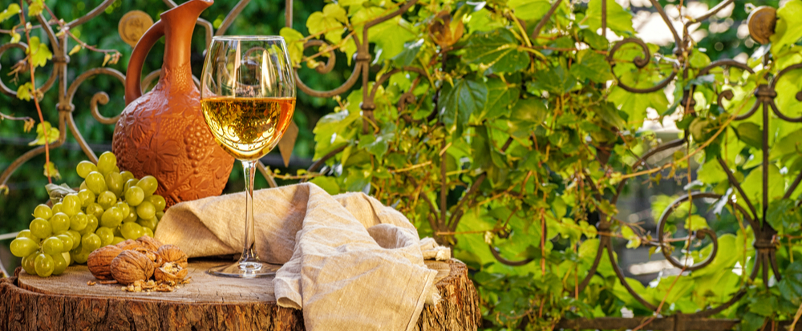

<p>Uma das primeiras coisas que aprendemos ao nos iniciar no mundo do vinho é a divisão básica entre brancos, rosés e tintos.
<br>
 Logo depois observamos que, dentro de cada um destes tons básicos, temos um infinito matiz proveniente das castas em si, dos processos enológicos e também do período de envelhecimento pelo qual o vinho passou.
<br>
 Assim, podemos ter um vinho branco (o Madeira velho, por exemplo) muito mais escuro do que um tinto (como o claro Pinot Noir).</p>